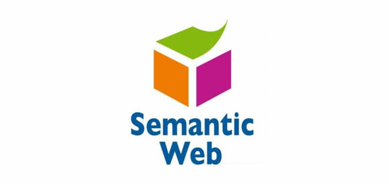

Biografia de Tim Berners-Lee
Tim Berners-Lee
Biografía de Sir Tim Berners-Lee: El Padre de la Web
Sir Timothy "Tim" Berners-Lee es un científico de la computación británico, nacido el 8 de junio de 1955 en Londres.
mundialmente reconocido como el inventor de la World Wide Web (WWW), el sistema que permite navegar por internet tal como lo conocemos hoy.
Años y Formación
Hijo de dos matemáticos que trabajaron en la Ferranti Mark I (una de las primeras computadoras), creció en un ambiente de innovación tecnológica. Se graduó en Física en el Queen's College de la Universidad de Oxford en 1976. Durante su tiempo como estudiante, fabricó su propia computadora utilizando piezas de repuesto y una televisión vieja.
Desarrollo de la World Wide Web
En 1980, mientras trabajaba como contratista en el CERN (Organización Europea para la Investigación Nuclear), propuso un proyecto basado en el concepto de "hipertexto" para facilitar el intercambio y la actualización de información entre investigadores. No fue hasta 1989 cuando unificó las ideas del hipertexto con el protocolo de comunicaciones de Internet. Sus contribuciones fundamentales fueron: HTML (HyperText Markup Language): El lenguaje de etiquetas para crear páginas. HTTP (HyperText Transfer Protocol): El protocolo que permite la transferencia de datos. URL (Uniform Resource Locator): El sistema de direcciones para localizar contenido. En 1990, puso en funcionamiento el primer servidor y el primer navegador web de la historia en una computadora NeXT.
Un Legado Abierto
Una de sus decisiones más trascendentales fue convencer al CERN de liberar el código fuente de la Web de forma gratuita y sin patentes en 1993. Esta apertura permitió que la red creciera de forma exponencial y global.
Reconocimientos y Actualidad
Por sus contribuciones, ha recibido numerosos honores: Fue nombrado Caballero por la Reina Isabel II en 2004. Recibió el Premio Turing en 2016 (considerado el Nobel de la informática). Fundó el World Wide Web Consortium (W3C) en el MIT para supervisar el desarrollo de los estándares de la red. Actualmente, lidera iniciativas para proteger la privacidad de los usuarios y garantizar que la web siga siendo un espacio libre, descentralizado y seguro para todos.
Proyectos más importantes "lista desordenada"
- La invención de la World Wide Web (CERN, 1989-1991)
- Fundación del W3C (1994 - Presente)
- La Web Semántica (Linked Data)
- Solid y el Proyecto Inrupt (Actualidad)
Orden cronologico Proyectos mas importantes "lista ordenada"
- 1980 ENQUIRE: Un programa simple (abuelo de la web) para enlazar nodos de información.
- 1989 Escribe la propuesta formal de la World Wide Web.
- 1991 Publica la primera página web de la historia (info.cern.ch).
- 1994 Funda el W3C para estandarizar la tecnología web.
- 2009 Funda la World Wide Web Foundation para luchar por una web libre y segura.
- 2016 Recibe el Premio Turing (el "Nobel" de la informática).
Tabla de proyectos
| Proyecto | Descripcion | logo |
|---|---|---|
| World Wide Web (WWW) | El sistema de gestión de información más importante del mundo. Inventó el HTML, HTTP y las URL para que todos podamos navegar por internet usando un navegador. | |
| W3C (World Wide Web Consortium) | Organización internacional que fundó para crear los estándares de la web. Gracias a esto, la web es gratuita, abierta y no le pertenece a ninguna empresa. | |
| Solid (Social Linked Data) | Su proyecto actual más importante. Busca que los usuarios recuperen el control de sus datos personales, guardándolos en "pods" privados en lugar de dárselos a grandes empresas. | |
| Web Semántica (Linked Data) | Una evolución de la web donde las máquinas pueden "entender" los datos. Permite que la información de diferentes sitios se conecte de forma inteligente y automática. |  |